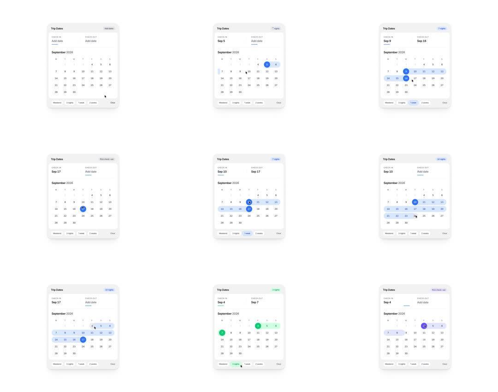

Date Range Picker: a Trip Dates card with CHECK-IN/CHECK-OUT fields over a month grid; picking dates paints endpoint pills and a rounded range band that grows with a wipe animation; preset chips (Weekend, 3 nights, 1 week, 2 weeks) auto-select matching ranges, each preset tinting the band its own color (blue, green, purple) with the night-count chip updating top-right.

Build a Trip Dates range picker. Card 320px, white, radius 16: header 'Trip Dates' + colored night-count chip (hidden until range complete); CHECK-IN/CHECK-OUT field pair (label 10px muted, value 15px medium, active field underlined); month grid (M-S headers, 13px days, muted outside-days). Interaction: first tap marks check-in - day gets a 28px filled circle with a 150ms scale pop (0.6->1); moving to a second day shows a preview band (20% tint of the active color) from the anchor to the hovered day, wrapping rows with 14px radius at wrap ends; second tap commits: band wipes on from anchor to end (250ms ease-out via clip-path inset animation), both endpoints filled, night chip fades in ('7 nights') tinted to match. Preset chips (Weekend / 3 nights / 1 week / 2 weeks) compute their range from the anchor (or today) and each owns a color - default blue #2563EB, 3 nights green #16A34A, weekend purple #7C3AED: switching preset crossfades band + endpoints + chip color (200ms) and re-wipes the band to the new extent. 'Clear' resets with a 200ms fade.